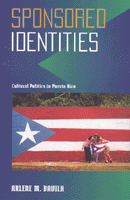

<body bgcolor="#FFFFFF" text="#000000" link="#0000FF" vlink="#CC0000" alink="#CC0000"><center><hr width="350" size="1" align="center" noshade>How views of national identity are forged and contested in Puerto Rico by local and transnational forces<hr width="350" size="1" align="center" noshade><p><a href="https://cdcshoppingcart.uchicago.edu/Cart/ChicagoBook.aspx?ISBN=9781566395489&&PRESS=temple" target="_top">Buy this book!</a> | <a href="https://cdcshoppingcart.uchicago.edu/Cart/Cart.aspx?PRESS=temple" target="_top">View Cart</a> | <a href="https://cdcshoppingcart.uchicago.edu/Cart/Cart.aspx?PRESS=temple" target="_top">Check Out</a></p><p></p></center><!--none//--><h1>Sponsored Identities</h1>
<H2>Cultural Politics in Puerto Rico</H2>
<h3>Arlene M. D�vila</h3>
<P>cloth 1-56639-548-8 $61.50, Oct 97, <FONT COLOR=#990033>Out of Stock Unavailable</FONT>
<br>paper 1-56639-549-6 $30.95, Oct 97, <FONT COLOR=#990033>Available</FONT>
<br>Electronic Book 1-43990-018-3 $29.95 <FONT COLOR=#990033>Out of Stock Unavailable</FONT>
<BR> 301 pp
5.5x8.25
25&nbsp;halftones
</P><p>"Now everybody loves Puerto Rican culture," says a Puerto Rican schoolteacher and festival organizer, "but that's exactly the problem." Thus begins this major examination of cultural nationalism as a political construct involving party ideologies, corporate economic goals, and grassroots cultural groups.
<p>Author Arlene D&aacute;vila focuses on the Institute for Puerto Rican Culture, the government institution charged with defining authenticated views of national identity since the 1950s, and on popular festival organizers to illuminate contestations over appropriate representations of culture in the increasingly mass-mediated context of contemporary Puerto Rico. She examines the creation of an essentialist view of nationhood based on a peasant culture and a "unifying" Hispanic heritage, and the ways in which grassroots organizations challenge and reconfigure definitions of national identity through their own activities and representations.
<p>D&aacute;vila pays particular attention to the increasing prominence of corporate sponsorship in determining what is distinguished as authentic "Puerto Rican culture" and discusses the politicization of culture as a discourse to debate and legitimize conflicting claims from selling commercial products to advocating divergent status options for the island. In so doing, D&aacute;vila illuminates the prospects for cultural identities in an increasingly transnational context by showing the growth of cultural nationalism to be intrinsically connected to forms of political action directed to the realm of culture and cultural politics. This in-depth examination also makes clear that despite contemporary concerns with "authenticity," commercialism is an inescapable aspect of all cultural expressions on the island.
<BR>&nbsp;<h2>Excerpt</h2><P>Excerpt available at <a href="http://www.temple.edu/tempress">www.temple.edu/tempress</a></p>
<BR>&nbsp;<h2>Contents</h2><P>
<p>List of Illustrations
<br>Preface
<br>List of Abbreviations
<br>Introduction: Making and Marketing National Identities
<br>1. Securing the Nation through Politics
<br>2. The Institute of Puerto Rican Culture and the Building Blocks of Nationality
<br>3. From the Center to the <I>Centros</I>: Cultural Politics from Below
<br>4. Just One More Festival: New Actors in Caone�s Cultural Politics
<br>5. Culture, Politics, and Corporate Sponsorship
<br>6. Contesting the Nation, Contesting Identities
<br>Conclusion: Cassettes, Posters, and Bumper Stickers
<br>Notes
<br>Bibliography
<br>Index
</P><BR>&nbsp;<H2>About the Author(s)</H2>
<table><tr><td valign="top"><img src="/tempress/authors/1340_au.gif" height="90" width="75"></td><td width="100%" valign="middle"><p><B>Arlene M. D�vila</B> is Assistant Professor of Anthropology at Syracuse University. She has previous work experience with museums and cultural institutions.</P></td></tr></table>
<BR><H2>Subject Categories</H2>
<p><A HREF="/tempress/anthropology.html" TARGET="_top">Anthropology</a>
<BR><A HREF="/tempress/latino.html" TARGET="_top">Latino/a Studies</a>
</p>
<BR><h2 class="inpageheading">In the series</H2>
<P><I><a href="http://www.temple.edu/tempress/puerto_rican.html" onMouseOver="window.status='Click for other books in this series!'; return true;" onMouseOut="window.status=''; return true;" target="_top">Puerto Rican Studies</a></i>, edited by Luz del Alba Acevedo, Juan Flores, and Emilio Pantojas-Garc�a.
</p><p>The objective of <i>Puerto Rican Studies</i>, edited by Luz del Alba Acevedo, Juan Flores, and Emilio Pantojas-Garc�a, is to bring to publication work on the Puerto Rican experience that is of interest to a wide range of audiences beyond the fields of Puerto Rican and ethnic studies, as well as to provide new insights into other interdisciplinary fields such as cultural studies, women's studies, and urban studies. The series provides a forum for young, creative and daring scholars venturing into nontraditional ways of dealing with issues in Puerto Rican studies. The editors are concerned with producing work that will appeal to the wider North American and English-speaking audiences reaching scholars, writers, activists, feminists, and intellectually curious people throughout the hemisphere and Europe.</p>
<p align="center"><a href="https://cdcshoppingcart.uchicago.edu/Cart/ChicagoBook.aspx?ISBN=9781566395489&&PRESS=temple" target="_top">Buy this book!</a> | <a href="https://cdcshoppingcart.uchicago.edu/Cart/Cart.aspx?PRESS=temple" target="_top">View Cart</a> | <a href="https://cdcshoppingcart.uchicago.edu/Cart/Cart.aspx?PRESS=temple" target="_top">Check Out</a></p><p><font face="Arial" size="1"><a href="copyright.html" onMouseOver="window.status='Web Copyright Policy';return true;" onMouseOut="window.status=''" title="Web Copyright Policy">&copy;</a> 2015 <a href="http://www.temple.edu" target="new" onMouseOver="window.status='Link to Temple University home page';return true;" onMouseOut="window.status=''" title="Link to Temple University home page">Temple University</a>. All Rights Reserved. http://www.temple.edu/tempress/titles/1340_reg.html</font></p>